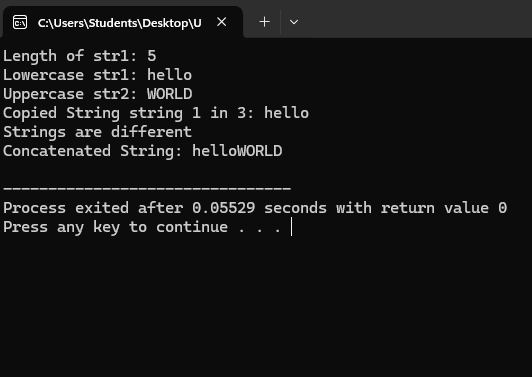
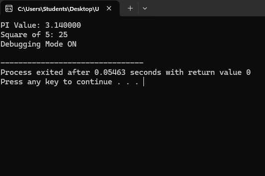
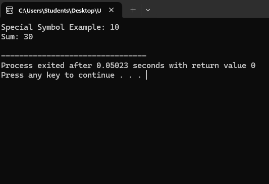
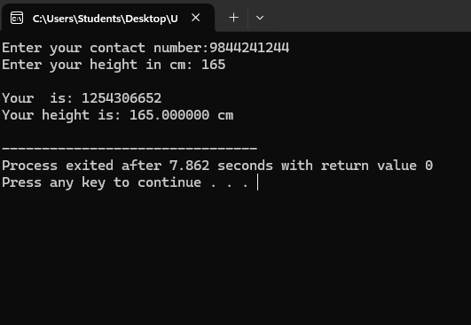
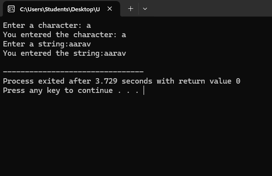
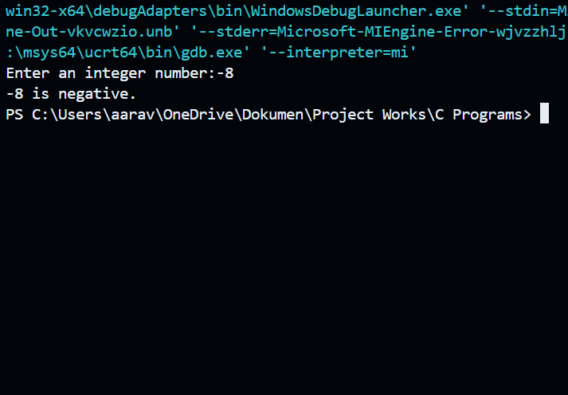
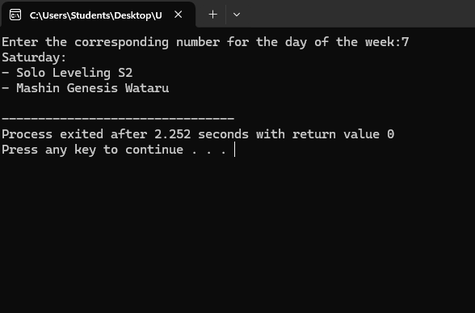

Code For C programs along with output
Different string handling functions
#include
#include
int main() {
char str1[50] = "Hello";
char str2[50] = "World";
char str3[50];
printf("Length of str1: %d\n", strlen(str1));
printf("Lowercase str1: %s\n", strlwr(str1));
printf("Uppercase str2: %s\n", strupr(str2));
strcpy(str3, str1);
printf("Copied String string 1 in 3: %s\n", str3);
if (strcmp(str1, str2) == 0)
printf("Strings are equal\n");
else
printf("Strings are different\n");
strcat(str1, str2);
printf("Concatenated String: %s\n", str1);
return 0;
}

Different pre-processor directives
#include
#include
#define PI 3.14
#define SQUARE(x) ((x) * (x))
#define DEBUG 1
int main() {
int num = 5;
printf("PI Value: %f\n", PI);
printf("Square of %d: %d\n", num, SQUARE(num));
#ifdef DEBUG
printf("Debugging Mode ON\n");
#endif
return 0;
}

Different types of tokens
#include
int main() {
int a = 10;
float b = 20.5;
char name[] = "John";
const int MAX = 100;
char str[] = "Hello, World!";
printf("Special Symbol Example: %d\n", a);
int sum = a + (int)b;
printf("Sum: %d\n", sum);
return 0;
}

Formatted I/O functions
#include
int main() {
int num;
float height;
printf("Enter your contact number:");
scanf("%ld", &num);
printf("Enter your height in cm: ");
scanf("%f", &height);
printf("\nYour is: %d\n", num);
printf("Your height is: %f cm\n", height);
return 0;
}

Unformatted I/O functions
#include
int main() {
char ch;
char str[100];
printf("Enter a character: ");
ch = getchar();
getchar();
printf("You entered the character: ");
putchar(ch);
printf("\n");
printf("Enter a string:");
gets(str);
printf("You entered the string:");
puts(str);
return 0;
}

Goto/Label statement
#include
int main(){
int num;
printf("Enter an integer number:");
scanf("%d", &num);
if (num < 0)
{
goto neg;
}
else if (num == 0)
{
printf("%d is zero.\n", num);
return 0;
}
printf("%d is positive.\n", num);
return 0;
neg:
printf("%d is negative.\n", num);
return 0;
}

Switch case statement
#include
int main() {
int day;
printf("Enter the corresponding number for the day of the week:");
scanf("%d", &day);
switch (day) {
case 1:
printf("Sunday:\n");
printf("- Medalist\n");
printf("- Zenshu\n");
break;
case 2:
printf("Monday:\n");
printf("- No scheduled anime episodes.\n");
break;
case 3:
printf("Tuesday:\n");
printf("- Alice-san Chi no Iroribata\n");
break;
case 4:
printf("Wednesday:\n");
printf("- Magic Maker\n");
printf("- Dr. Stone: Science Future (Part 1)\n");
break;
case 5:
printf("Thursday:\n");
printf("- The Apothecary Diaries (Season 2)\n");
printf("- Farmagia\n");
break;
case 6:
printf("Friday:\n");
printf("- From Bureaucrat to Villainess: Dad's Been Reincarnated!\n");
printf("- Welcome to Japan, Ms. Elf!\n");
break;
case 7:
printf("Saturday:\n");
printf("- Solo Leveling S2\n");
printf("- Mashin Genesis Wataru\n");
break;
default:
printf("Enter a valid integer between 1 and 7.\n");
break;
}
return 0;
}
